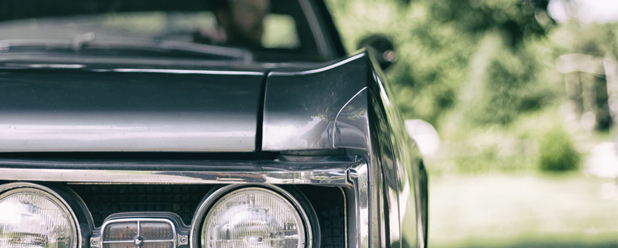
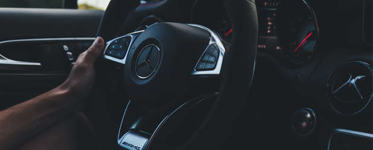

Проверка подержанного авто перед покупкой — 7 простых шагов
Если вы решили купить подержанный автомобиль, будьте готовы к тому, что придется столкнуться с некоторыми сложностями. Но, ознакомившись с нашей инструкцией, вы вполне сможете провести проверку подержанного авто самостоятельно, не обладая профессиональными знаниями и навыками.
Шаг 1. Проверьте документы
Заранее попросите продавца привезти все документы, необходимые для продажи подержанного автомобиля, в том числе документ, удостоверяющий личность продавца. Различные отговорки и «правдивые» истории о том, что тот или иной документ привезти не получится, должны вас насторожить.
Шаг 2. Будьте бдительны
Не поленитесь приехать на встречу с продавцом подержанного автомобиля на полчаса раньше. Вы получите возможность самостоятельно ознакомиться с автомобилем перед покупкой в отсутствие владельца, без спешки и стеснения. А возможно, застанете хозяина за приведением автомобиля «в порядок», маскировкой недостатков.
Шаг 3. Проверьте VIN-код
Это идентификационный номер автомобиля, расположенный на торпедо или под капотом авто. При покупке подержанного автомобиля его обязательно нужно сверить с номером, указанным в ПТС. Номера должны совпадать. Если есть возможность, можно сразу проверить VIN-код автомобиля через базу ГИБДД.
Шаг 4. Проверьте состояние кузова
Осмотрите зазоры между деталями авто. Они должны везде иметь примерно одинаковый размер. Убедитесь, что детали кузова подержанного авто не были заменены на пластиковые, что отсутствует ржавчина, незаметные при поверхностном осмотре авто повреждения. Хорошим помощником при осмотре подержанного автомобиля станет прибор для замера толщины покрытия кузова. Это поможет выявить детали, которые были окрашены. Осмотрите шины. Если геометрия кузова не нарушена, их износ происходит равномерно. На всех стеклах должна стоять маркировка, указан год выпуска. Днище необходимо осмотреть с фонариком.
Шаг 5. Осмотрите двигательный отсек
Даже у поддержанного авто должна быть оригинальная наклейка на крышке капота. Убедитесь, что нет подтеканий жидкостей. Проверьте уровень масла подержанного автомобиля, а также чистое ли оно, уровень охлаждающей жидкости.
Шаг 6. Осмотрите багажник и салон
В багажном отсеке проверьте заводскую наклейку, данные должны совпадать с данными в документах на автомобиль. Осмотрите целостность обивки салона, обратите внимание на запах. Протестируйте все функции приборной панели подержанного автомобиля.
Шаг 7. Устройте тест-драйв
Обратите внимание на то, как запускается двигатель подержанного авто, насколько плавно происходит переключение передач, нет ли постукиваний во время движения. Проверьте тормозную систему автомобиля с помощью резкого торможения, ускорение автомобиля. Внимательно прислушивайтесь: нет ли посторонних звуков?
Если в ходе проверки никаких существенных недочетов не выявлено, можно приступать к заключению сделки. Мелкие недочеты используйте в качестве аргументов во время торга для снижения цены на подержанный автомобиль.
Редакция spacemir.com